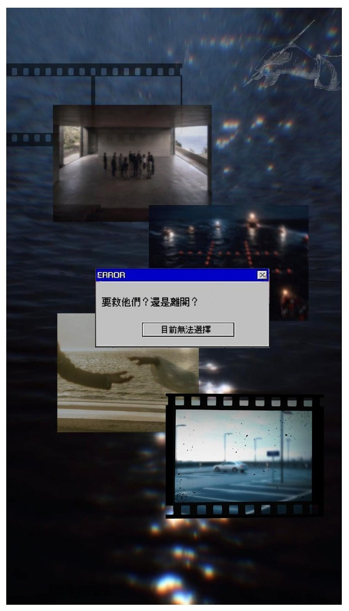
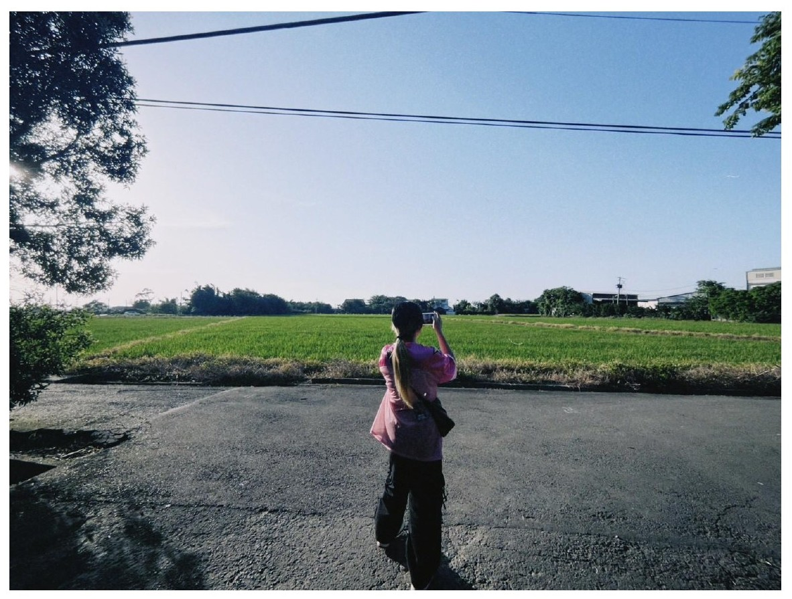
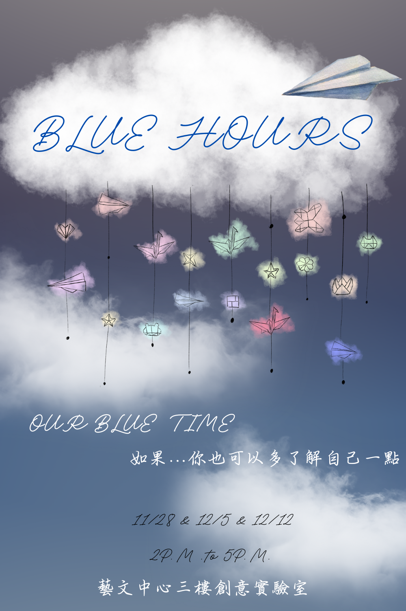

ABOUT.TXT♡ ♡ ×
嗨！我是楊羽涵 ✦
我是來自政治大學廣告學系的學生，擅長製作簡報、美編、製作海報等等。我在廣告設計、傳播方面略有研究，也有在累積活動、剪輯、拍攝、專案的經驗。
同時我擔任社團活動組長，在企劃、主持和表演上也有一定的經驗。我的興趣很多元，很善於與人溝通交流，不怕生，非常歡迎與我聊天交流、互換經驗！
簡報設計美編排版海報設計企劃執行拍攝剪輯主持表演
✦ PERSONAL BRAND / CREATIVE PORTFOLIO ✦
Ideas, visuals & a little bit of magic.
把想法變成畫面，讓創意有自己的樣子。
一點點專業，很多好奇心。
我是來自政治大學廣告學系的學生，擅長製作簡報、美編、製作海報等等。我在廣告設計、傳播方面略有研究，也有在累積活動、剪輯、拍攝、專案的經驗。
同時我擔任社團活動組長，在企劃、主持和表演上也有一定的經驗。我的興趣很多元，很善於與人溝通交流，不怕生，非常歡迎與我聊天交流、互換經驗！
從影像、舞蹈到視覺企劃，收集每一次創作。

03每個人都有自己的夢，夢到底是怎麼樣的？透過模糊和意象呈現夢境的樣貌。

04在繁雜又忙碌的生活中，重新找回童年時的快樂，邀請觀者一起逃跑吧！

05作品依原 PDF 順序排列。點作品圖可瀏覽該作品的其他圖片。✦
歡迎交流、交換想法，或一起創作！